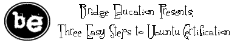

News Bytes
By Deividson Luiz Okopnik and Howard Dyckoff

|
Contents: |
Please submit your News Bytes items in plain text; other formats may be rejected without reading. [You have been warned!] A one- or two-paragraph summary plus a URL has a much higher chance of being published than an entire press release. Submit items to bytes@linuxgazette.net.
News in General
 Linux Foundation makes Kernel Developer Ted Ts'o new CTO
Linux Foundation makes Kernel Developer Ted Ts'o new CTO
The Linux Foundation (LF) named Linux kernel developer Theodore Ts'o to the position of Chief Technology Officer at the Foundation. Ts'o is currently a Linux Foundation fellow, a position he has been in since December 2007. He is a highly regarded member of the Linux and open source community and is known as the first North American kernel developer. Other current and past LF fellows include Steve Hemminger, Andrew Morton, Linus Torvalds and Andrew Tridgell.
Ts'o will be replacing Markus Rex, who was on loan to the Foundation from Novell. Rex will return to Novell as the acting general manager and senior vice president of Novell's OPS business unit.
As CTO, Ts'o will lead all technical initiatives for the Linux Foundation, including oversight of the Linux Standard Base (LSB) and other workgroups such as Open Printing. He will also be the primary technical interface to LF members and the LF's Technical Advisory Board, which represents the kernel community.
"I continue to believe in power of mass collaboration and the work that can be done by a community of developers, users and industry members, I'm looking forward to translating that power into concrete milestones for the LSB specifically, and for Linux overall, in the year ahead," says Ts'o.
Since 2001, Ts'o has worked as a senior technical staff member at IBM where he most recently led a worldwide team to create an enterprise-level real-time Linux solution. Ts'o was awarded the 2006 Award for the Advancement of Free Software by the Free Software Foundation (FSF).
Ts'o is also a Linux kernel developer, a role in which he serves as ext4 file system maintainer, as well as the primary author and maintainer of e2fsprogs, the userspace utilities for the ext2, ext3, and ext4 file systems. He is the founder and chair of the annual Linux Kernel Developers' Summit and regularly presents tutorials on Linux and other open source software. Ts'o was project leader for Kerberos, a network authentication system. He was also a member of the Security Area Directorate for the Internet Engineering Task Force where he chaired the IP Security (IPSEC) Working Group and was a founding board member of the Free Standards Group (FSG).
2009 Linux Collaboration Summit Call for Participation
The Linux Foundation has opened registration and announced a call for participation for the 3rd Annual Collaboration Summit which will take place April 8-10, 2009 in San Francisco.
Sponsored by Intel in 2009, the Collaboration Summit is an exclusive, invitation-only gathering of the brightest minds in Linux, including core kernel developers, distribution maintainers, ISVs, end users, system vendors, and other community organizations. It is the only conference designed to accelerate collaboration and encourage solutions by bringing together a true cross-section of leaders to meet face-to-face to tackle and solve the most pressing issues facing Linux today.
The 2009 Collaboration Summit will include:
- the Moblin Development Summit
- High Performance Computing
- Systems Management
- the Linux ISV Summit
LF workgroups such as Open Printing and the LSB will also hold meetings.
The Collaboration Summit will be co-located with the CELF Embedded Linux Conference and the Linux Storage and Filesystem Workshop. The winner of the "We're Linux" video contest (see next item) will also be revealed at the Summit, where the winning video and honorable mentions will be screened for the event's attendees.
For more information on the Linux Foundation Collaboration Summit,
please visit:
http://events.linuxfoundation.org/events/collaboration-summit.
To request an invitation, visit:
http://events.linuxfoundation.org/component/registrationpro/?func=details&did=2.
For the first time, the Linux Foundation is inviting all members of the Linux and open source software communities to submit a proposal for its Annual Collaboration Summit, its cornerstone event. CFP submissions are due February 15, 2009. To submit a proposal, visit: http://events.linuxfoundation.org/events/collaboration-summit.
Linux Foundation hosting "We're Linux" Video Contest
In January, the Linux Foundation (LF) launched of its grassroots "We're Linux" video contest. The campaign seeks to find the best user-generated videos that demonstrate what Linux means to those who use it and inspire others to try it. The contest is open to everyone and runs through midnight on March 15, 2009. The winner will be revealed at the Linux Foundation's Collaboration Summit on April 8, 2009, in San Francisco. The winner will be awarded a trip to Tokyo, Japan to participate in the Linux Foundation's Japanese Linux Symposium.
In response to early and resounding community input, the campaign has been renamed from the original "I'm Linux" to the "We're Linux" video contest. This name better expresses how Linux is represented by more than any one person or company.
To become a member of the Linux Foundation's Video forum, view early submissions, or submit your own video for the "We're Linux" contest, visit http://video.linuxfoundation.org.
AMD plans dual-core Neo laptop chip
At CES, AMD announced its platform for ultra-thin notebooks at an affordable price. Previously codenamed "Yukon," the platform is based on the new AMD Athlon Neo processor, ATI Radeon integrated graphics or Radeon HD 3410 discrete graphics. The Neo platform debuts within the HP Pavilion dv2 Entertainment Notebook PC ultra-thin notebook, which is less than one inch thick and weighs in under four pounds. The HP Pavilion dv2 has a 12.1-inch diagonal LED display, near-full-size keyboard, and an optional external optical disc drive with Blu-ray capability.
In mid-January AMD also announced a dual-core Athlon Neo processor, code-named Conesus, which is planned by for mid-2009. The dual-core Neo and supporting chips provide for more operational capability than the current crop of netbooks powered by Intel Atom processors.
Grid.org Open Source HPC Community Hits Visitor Milestone
Grid.org, the on-line community for open source cluster and grid software, announced in January that the site garnered over 100,000 unique visitors in 2008, with the highest traffic generating from the UniCluster, Amazon EC2 and HPC discussion groups.
Launched in November 2007, Grid.org is an open source community for cluster and grid users, developers, and administrators. It is home to the UniCluster open source project as well as other open source projects. For more information, go to http://www.grid.org.
Recent focus on cloud computing and the announcement of UniCloud, UniCluster's extension into the Amazon EC2 cloud, have been popular topics resulting in an increase in traffic to the site.
"Having a vibrant community of users and thought leaders is the cornerstone of any successful open source software project," notes Gary Tyreman, vice president and general manager of HPC for Univa UD. "From our groundbreaking work in Amazon EC2 to the UniCloud offering for Virtual HPC management, Univa UD is committed to initiating and supporting the future of HPC technology, community and open source."
Conferences and Events
- 2009 SCADA and Process Control Summit
-
February 2 - 3, Disney Dolphin, Lake Buena Vista, FL
http://www.sans.org/scada09_summit.
- JBoss Virtual Experience on-line Conference
-
February 11, 8:30 am - 6:00 pm EST
http://www-2.virtualevents365.com/jboss_experience/agenda.php.
- Black Hat DC 2009
-
February 16 - 19, Hyatt, Arlington, VA
http://blackhat.com/html/bh-dc-09/bh-dc-09-main.html.
- RubyRX Conference
-
February 19 - 21, 2009, Reston, NC
http://www.nfjsone.com/conference/raleigh/2008/02/index.html.
- SCALE 7x 2009
-
February 20 - 22, Westin LAX Hotel, Los Angeles, CA
http://www.socallinuxexpo.org.
- OpenSolaris Storage Summit 2009 - Free
-
February 23, Grand Hyatt, San Francisco, CA
http://wikis.sun.com/display/OpenSolaris/OpenSolaris+Storage+Summit+200902.
- Gartner Mobile & Wireless Summit 2009
-
February 23 - 25, Chicago, IL
http://gartner.com/us/wireless.
- 7th USENIX Conference on File and Storage Technologies (FAST '09)
-
February 24-27, San Francisco, CA
Learn from Leaders in the Storage Industry at the 7th USENIX Conference on File and Storage Technologies (FAST '09)
Join us in San Francisco, CA, February 24-27, 2009, for the 7th USENIX Conference on File and Storage Technologies. On Tuesday, February 24, FAST '09 offers ground-breaking file and storage tutorials by industry leaders such as Brent Welch, Marc Unangst, Simson Garfinkel, and more. This year's innovative 3-day technical program includes 23 technical papers, as well as a Keynote Address, Work-in-Progress Reports (WiPs), and a Poster Session. Don't miss out on opportunities for peer interaction on the topics that mean the most to you.
Register by February 9 and save up to $200!

http://www.usenix.org/fast09/lg
- Next-Gen Broadband Strategies
-
February 24, Cable Center, Denver, CO
http://www.lightreading.com/live/event_information.asp?event_id=29032.
- Sun xVM Virtualization Roadshow
-
February 25, various US cities
http://www.xvmgetmoving.com/register.php.
- CSO Perspectives - 2009
-
March 1 - 3, Hilton, Clearwater Beach, FL
http://www.csoonline.com/csoperspectives09.
- eComm 2009
-
March 3 - 5, SF Airport Hyatt, San Mateo, CA
http://ecommconf.com/.
- DrupalCons 2009
-
March 4 - 7, Washington, DC
http://dc2009.drupalcon.org/.
- O'Reilly Emerging Technology Conference
-
March 9 - 12, Fairmont Hotel, San Jose, CA
http://conferences.oreilly.com/etech?CMP=EMC-conf_et09_int&ATT=EM5-NL.
- SD West 2009
-
March 9 - 13, Santa Clara, CA
http://www.sdexpo.com/.
- ManageFusion 09
-
March 10 - 12, MGM Grand Hotel, Las Vegas, NV
http://www.managefusion.com/agenda.aspx.
- VEE 2009 Conference on Virtual Execution Environments
-
March 11 - 13, Crowne Plaza, Washington, DC
http://www.cs.purdue.edu/VEE09/Home.html.
- Orlando Scrum Gathering 2009
-
March 16 - 18, Gaylord Resort, Orlando, FL
http://www.scrumgathering.org.
- Forrester's IT Infrastructure & Operations Forum
-
March 18 - 19, San Diego, CA
http://www.forrester.com/events/eventdetail?eventID=2372.
- EclipseCon 2009
-
March 23 - 26, Santa Clara, CA
http://www.eclipsecon.org/2009/home.
- ApacheCon Europe 2009
-
March 23 - 27, Amsterdam, Nederlands
http://eu.apachecon.com/c/aceu2009.
- USENIX HotPar '09 Workshop on Hot Topics in Parallelism
-
March 30 - 31, Claremont Resort, Berkeley, CA
http://usenix.org/events/hotpar09/.
- International Virtualization and Cloud Computing Conferences
-
March 30 - April 1, Roosevelt Hotel, New York, NY
http://www.virtualizationconference.com/
http://cloudcomputingexpo.com/.
- ESC Silicon Valley 2009 / Embedded Systems
-
March 30 - April 3, San Jose, CA
http://esc-sv09.techinsightsevents.com/.
- Linux Collaboration Summit 2009
-
April 8 - 10, San Francisco, CA
http://events.linuxfoundation.org/events/collaboration-summit.
- RSAConference 2009
-
April 20 - 24, San Francisco, CA
http://www.rsaconference.com/2009/US/Home.aspx.
- USENIX/ACM LEET '09 & NSDI '09
-
The 6th USENIX Symposium on Networked Systems Design & Implementation (USENIX NSDI '09) will take place April 22–24, 2009, in Boston, MA.
Please join us at The Boston Park Plaza Hotel & Towers for this symposium covering the most innovative networked systems research, including 32 high-quality papers in areas including trust and privacy, storage, and content distribution; and a poster session. Don't miss the opportunity to gather with researchers from across the networking and systems community to foster cross-disciplinary approaches and address shared research challenges.
Register by March 30, 2009 to save!

- STAREAST - Software Testing, Analysis & Review
-
May 4 - 8, Rosen Hotel, Orlando, FL
http://www.sqe.com/go?SE09home.
Distro News
FreeBSD 7.1 Released
FreeBSD Release Engineering Team has announced FreeBSD 7.1-RELEASE as the second release from the 7-STABLE branch. It improves on the functionality of FreeBSD 7.0 and introduces several new features.
Some of the highlights in 7.1:
- The ULE scheduler is now the default in GENERIC kernels for amd64 and i386 architectures;
- support for using DTrace inside the kernel has been imported from OpenSolaris;
- a new and much-improved NFS Lock Manager (NLM) client;
- boot loader changes allow, among other things, booting from USB devices and booting from GPT-labeled devices;
- the cpuset(2) system call and cpuset(1) command have been added, providing an API for thread to CPU binding and CPU resource grouping and assignment;
- KDE was updated to 3.5.10,
- GNOME was updated to 2.22.3;
- DVD-sized media is now supported for the amd64 and i386 architectures.
FreeBSD 7.1 is available here: http://www.freebsd.org/where.html.
Ubuntu 8.04.02 Maintenance, 9.04 Alpha 3 releases out
Ubuntu 8.04.2 LTS, the second maintenance update to Ubuntu's 8.04 LTS release, is now available. This release includes updated server, desktop, and alternate installation CDs for the i386 and amd64 architectures.
In all, over 200 updates have been integrated, and updated installation media has been provided so that fewer updates will need to be downloaded after installation. These include security updates and corrections for other high-impact bugs, with a focus on maintaining compatibility with Ubuntu 8.04 LTS.
This is the second maintenance release of Ubuntu 8.04 LTS, which will be supported with maintenance updates and security fixes until April 2011 on desktops and April 2013 on servers.
To get Ubuntu 8.04.2 LTS, visit: http://www.ubuntu.com/getubuntu/download
The release notes, which document caveats and workarounds for known issues, are available at: http://www.ubuntu.com/getubuntu/releasenotes/804
Also, a complete list of post-release updates can also be found at: https://wiki.ubuntu.com/HardyReleaseNotes/ChangeSummary/8.04.2
In January, the Ubuntu community announced the availability of the third alpha release of Ubuntu 9.04 - "Jaunty Jackalope". Read the release announcement and release notes at: https://lists.ubuntu.com/archives/ubuntu-devel-announce/2009-January/0 00524.html.
Red Hat Enterprise Linux 5.3 Now Available
Red Hat Enterprise Linux 5.3 was released in January. In this third update to Red Hat Enterprise Linux 5, customers receive a wide range of enhancements, including increased virtualization scalability, expanded hardware platform support and incorporation of OpenJDK Java technologies. Customers with a Red Hat Enterprise Linux subscription will receive the Red Hat Enterprise Linux 5.3 update from Red Hat Network.
The primary new features of Red Hat Enterprise Linux 5.3 include:
- Increased scalability of virtualized x86-64 environments: This includes virtual server support for up to 32 virtual CPUs and 80GB of memory. Physical server limits have also been expanded to match the size of the latest hardware systems, with up to 126 CPUs and 1TB main memory. New features, such as support for Hugepage memory and Intel Extended Page Tables (EPT), also improve the performance of virtual servers.
- Support for Intel Core i7 (Nehalem) quad-core processors
- Inclusion of OpenJDK: The OpenJDK in Red Hat Enterprise Linux 5.3 is compatible with all applications written for Java SE 6 and previous versions. OpenJDK is fully supported directly by Red Hat.
Red Hat Enterprise Linux 5.3 also includes enhancements spanning many other components; Release Notes document over 150 additions and updates.
Solaris Release adds performance and custom storage apps
OpenSolaris release 2008-11 went GA (General Availability release) in early December and also ended the previous support limitation of 18 months. This latest version has improved performance and new tools for building custom storage applications. Sun also released Java 6.update10 with JavaFX extensions for building interactive applications.
For the desktop, OpenSolaris now includes includes Time Slider, an easy to use graphical interface that brings ZFS functionality such as instant snapshots and improved wireless configuration support to all users. To encourage developers to work on Solaris as a development platform, it now comes with D-trace probes that run in Firefox.
For developers seeking a pre-installed OpenSolaris notebook, Sun and Toshiba announced a strategic relationship to deliver OpenSolaris on Toshiba laptops in 2009. Expect additional announcements in early 2009 about model specifics, pricing, and availability.
Charlie Boyle, Director of OpenSolaris Marketing, spoke with LG just after the announcement and explained that ZFS and tools like D-Light (based on D-Trace feature in Solaris) allow seeing what applications are doing in real time and allow developers to rapidly debug and optimize their applications. "OpenSolaris is optimized for performance on the latest systems. Users deploying OpenSolaris will get the most out of their systems with advances in scalability, power management, and virtualization."
Regarding the extension of Solaris support beyond 18 months, Boyle explained, "Customers can get support for as long as they have a contract on their system. We have removed the artificial 18 month window... we will take calls on whatever version a customer is running and get them the best fix for their situation."
In addition to performance gains, other enhancements include:
- a new Automated Installer application, allowing users to decide which packages to include within the installation Web service;
- the Distro Constructor, enabling users to create their own custom image for deployment across their systems;
- and a new storage feature, COMSTAR Storage Framework, that allows developers to create and customize their own open storage server with OpenSolaris.
Software and Product News
Bridge Education now offering Ubuntu Authorized courses
Bridge Education (BE) has been selected as the first Ubuntu Authorized Training Partner in the US. Beginning in February 2009, BE will begin delivering Ubuntu Authorized courses in select cities nationwide. To find a class nearest you, please contact BE at 866.322.3262 or visit BE on the web at http://bridgeme.com.

Eclipse PHP Dev Tools (PDT) 2.0 Released
Fully compliant with Eclipse standards, the new 2.0 release of the PHP Development Tools (PDT) enables developers to leverage a wide variety of Eclipse projects, such as Web Tools Project (WTP) and Dynamic Language Toolkit (DLTK), for faster and easier PHP development. PDT is an open source development tool that provides the code editing capabilities needed to get started developing PHP applications. Version 2.0 was available in January.
To support the object-oriented features of PHP, PDT 2.0 now includes:
- Type Hierarchy view that navigates object-oriented PHP code faster and more easily.
- Type and method navigation that allows for easy searching of PHP code based on type information.
- Override indicators that visually tag PHP methods that have been overridden.
More info is available here: http://www.eclipse.org/projects/project_summary.php?projectid=tools.pdt
The Java Source Helper plugin was also released in January. Java Source Helper shows a block of code related to a closing brace/bracket if it is currently out of visible range in the editor. The Eclipse Java editor will check to see if the related starting code bracket is out of visible range and, if it is, it will float a window that shows the code related to that starting block. This is useful in deeply nested code. The feature is similar to one in the IntelliJ IDEA IDE.
Cisco's Aironet 1140 Innovates 80.11n Access Points
Cisco is now offering an enterprise-class next-generation wireless access point that combines full 802.11n performance with cost-effectiveness. The new Cisco Aironet 1140 Series Access Point supports the Wi-Fi Certified 802.11n Draft 2.0 access point standard and is designed for high-quality voice, video, and rich media across wireless networks.
Cisco delivered the first enterprise-class Wi-Fi Certified 802.11n Draft 2.0 platform in 2007. The Aironet 1140 offers full 802.11n performance and security while using standard Power over Ethernet (PoE). The new access point introduces Cisco M-Drive Technology that enhances 802.11n performance. The Aironet 1140 is the only dual-radio platform that combines full 802.11n Draft 2.0 performance (up to nine times the throughput of existing 802.11a/g wireless networks) and built-in security features using standard 802.3af Power over Ethernet.
ClientLink, a feature of Cisco M-Drive Technology, helps extend the useful life of existing 802.11a/g devices with the use of beam forming to improve the throughput for existing 802.11a/g devices and reduce wireless coverage holes for legacy devices.
Miercom, an independent testing and analysis lab, tested ClientLink and showed an increase of up to 65 percent in throughput for existing 802.11a/g devices connecting to a Cisco 802.11n network. Unlike other solutions that do not offer performance improvements for legacy devices, ClientLink delivers airtime connectivity fairness for both 802.11n and 802.11a/g devices. For the complete Miercom testing methodology and results, download the ClientLink report at: http://www.cisco.com/go/802.11n/
Learn more about the Cisco Aironet 1140 Series Access Point and Cisco
M-Drive Technology in a video with Chris Kozup, Cisco's senior manager
of mobility solutions.
More information at http://blogs.cisco.com/wireless/comments/cisco_taking_80211n_mainstream_with_aironet_1140.
XAware Releases XAware 5.2
XAware has released XAware 5.2, an open source data integration solution for creating and managing composite data services. Working with its user community, XAware has included upgrades that make it easier to design and deliver data services for Service-Oriented Architecture (SOA), Rich Internet Applications (RIA), and Software as a Service (SaaS) applications.
The most notable addition to XAware 5.2 is the data-first design feature. Leveraging two important aspects of the Eclipse Data Tools Project, Connection Profiles and Data Source Explorer, XAware users can now create data services by starting with data sources. This option, often known as bottom-up design, is an ideal fit for data-oriented developers and architects, especially those who need to combine data from multiple sources. XAware also gives developers the option of starting the design process with XML Schemas, an approach known as top-down design.
XAware has also introduced a new service design wizard that enables new users to quickly build and test services with relational data sources. Additional enhancements include a new outline view, improved search functionality, greater run-time query control and updated support.
XAware 5.2 is available for free use under the GPLv2 license and via a commercial license. Services and support subscriptions are also available for purchase from XAware, Inc.
Organizations are encouraged to take advantage of XAware's QuickStart program, which includes training, consulting services, and an initial period of active support from the XAware team. Starting at just $750, QuickStart helps companies quickly start building composite data services for SOA, RIA and SaaS projects.
For more information and to download XAware 5.2, please visit: www.xaware.com.
Jaspersoft updates its BI Suite Community Edition
In December, Jaspersoft upgraded its Business Intelligence Suite v3 in both the Community and Professional Editions. The new release includes advanced charting and visualization capabilities that supplement the dynamic dashboards and interactive Web 2.0 interfaces introduced earlier.
Specific features include new built-in chart types, the ability to create and apply chart themes to customize the detailed appearance of charts, and easy integration with third-party visualization engines.
Developers can use the new chart theme capability available in Jaspersoft v3.1 to change the overall appearance of built-in charts without having to write chart customizers or use an extensive set of chart properties. Other features available in Jaspersoft v3.1 include the recently announced certification for Sun's GlassFish application server, and Section 508 compliance for U.S. government agencies.
Additional enhancements now available in Jaspersoft v3.1 include:
- professional edition localization packs now included in all geographies at no additional charge, including English, French, German, Spanish and Japanese
- data source support for calculated fields in the ad hoc query metadata layer using the Jaspersoft expression language
- the latest version of the iReport graphical report design tool, now running on the NetBeans platform
- portal support now available in the Community Edition, including the JSR-168 compliant Jaspersoft portlet
- improved support for "Domain" metadata-driven ad hoc query from the iReport advanced report design tool
Jaspersoft's BI Suite delivers on the promise of "Business Intelligence for Everyone" by using Web 2.0 technologies coupled with advanced metadata functionality. It includes an interactive Web 2.0 interface based on an AJAX framework, dynamic HTML, and other technologies that deliver the ability to mash-up business intelligence features to provide a seamless, cross-application, browser-based experience. Jaspersoft makes it easy for anyone to build and update dashboards in real-time, drag and drop information from multiple sources, and build queries and reports with the click of a mouse.
Netbook Features Bootable OS on USB
EMTEC has announced its Gdium netbook computer which boasts a compact size and light weight with 512 MB of RAM, a 10-inch screen size and a full keyboard.
Among the open source applications included with Gdium are: FireFox browser, Thunderbird e-mail client, Instant Messaging, VoIP, Blog editor, audio/video players, security utilities, as well as the Open Office suite of word processing, spreadsheets, and presentations.
What makes Gdium unique is the G-Key, an 8 or 16 GB bootable USB key on which the Mandriva Linux operating system, applications, and personal data are stored. The G-Key allows each user to store their personal info and preference securely, without leaving a trace on the computer.
The Gdium will retail for under $400 and comes in 3 colors - White, Black, and Pink. For more info, go to: http://www.gdium.com
Gdium.Com is also hosting the One Laptop Per Hacker (OLPH) program.
The OLPH Project provides a free infrastructure to individuals who want to develop software for the Gdium platform. Gdium software can be freely modified, adapted, optimized, or replaced; the user can download and install new solution packs and freely modify most of it.
All interested developers can purchase an early release Gdium but must take into account that these may have some some bugs and known issues. OLPH Project members get one extra Gkey.
Openmoko Demos Distros on Open Mobile Phone
At the CES show in early January, Openmoko Inc, maker of fully open mobile phone products, demonstrated several Linux distributions running on the FreeRunner mobile hardware platform. These included the Debian distro, community-driven FDOM, QT by Trolltech (recently acquired by Nokia), and Google's Android.
In a video shot at CES 2009, William Lai of Openmoko discusses the power of Open Source community-driven development for new mobile applications and devices. Click here to watch: http://www.youtube.com/watch?v=8R4KvJv6xSE
In addition to its role as a mobile phone, developers are embracing the open hardware, open software, and open CAD of the Openmoko platform to create new embedded consumer products.
Openmoko is both a commercial and community driven effort to create open mobile products that consumers can personalize, much like a computer. Openmoko is dedicated to bringing freedom and flexibility to consumer electronics and vertical market devices.
Next Gen Cfengine 3 released
Cfengine is an automated suite of programs for configuring and maintaining Unix and Linux computers. It has been used on computing arrays of up to 20,000 computers since 1993 by a wide range of organizations. Cfengine is supported by active research and was the first autonomic, hands-free management system for Unix-like operating systems.
Cfengine 3.0.0 is a new and substantial rewrite of cfengine's technology, building on core principles used over the past 15 years, and extending them with technology inspired by Promise Theory. (Promise theory describes policy-governed services in a framework of autonomous agents. It is a framework for analyzing models of modern networking and was developed at the University of Oslo.)
The new cfengine enhances its support of configuration management with:
- A brand new language with a simple uniform syntax and powerful templating.
- Integrated self-diagnostics and automated self-healing documentation.
- Generic file editing with multiple models.
- Pattern matching and design features to match any environment, large and small.
- Integrated knowledge management using topic maps.
- Support available from cfengine AS at http://www.cfengine.com.
- Upcoming Enterprise version in 2009 with extended features.
- GPLv3 code.
Cfengine 3 also offers full integration with existing cfengine 2 systems and auto-encapsulation of cfengine 2 for incremental upgrades.
Mark Burgess, author of Cfengine, recently gave a presentation on Promise Theory and Cfengine 3 at Google on his way to LISA 08. It is now available at YouTube: http://www.youtube.com/watch?v=4CCXs4Om5pY
Talkback: Discuss this article with The Answer Gang
Deividson Luiz Okopnik
![[BIO]](../gx/authors/dokopnik.jpg)
Deividson was born in União da Vitória, PR, Brazil, on 14/04/1984. He became interested in computing when he was still a kid, and started to code when he was 12 years old. He is a graduate in Information Systems and is finishing his specialization in Networks and Web Development. He codes in several languages, including C/C++/C#, PHP, Visual Basic, Object Pascal and others.
Deividson works in Porto União's Town Hall as a Computer Technician, and specializes in Web and Desktop system development, and Database/Network Maintenance.
Howard Dyckoff
Howard Dyckoff is a long term IT professional with primary experience at
Fortune 100 and 200 firms. Before his IT career, he worked for Aviation
Week and Space Technology magazine and before that used to edit SkyCom, a
newsletter for astronomers and rocketeers. He hails from the Republic of
Brooklyn [and Polytechnic Institute] and now, after several trips to
Himalayan mountain tops, resides in the SF Bay Area with a large book
collection and several pet rocks.
Howard maintains the Technology-Events blog at
blogspot.com from which he contributes the Events listing for Linux
Gazette. Visit the blog to preview some of the next month's NewsBytes
Events.